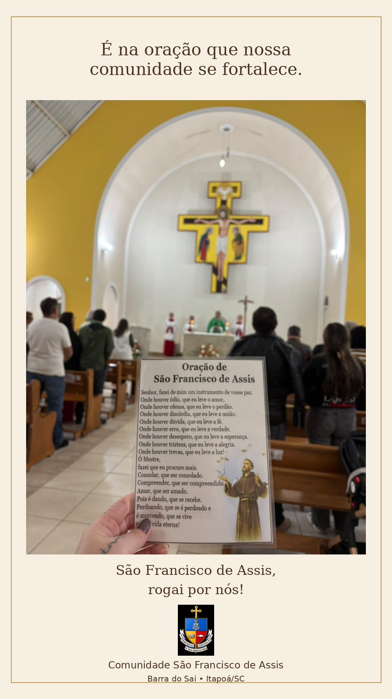
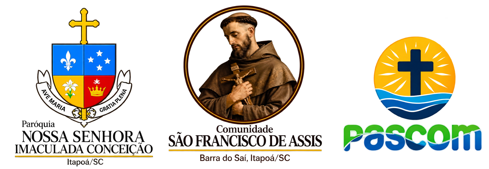
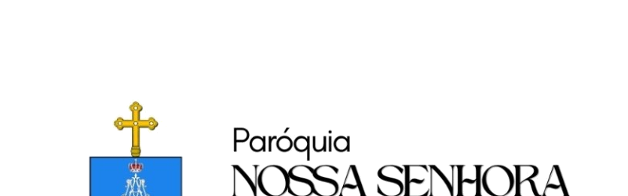

30 anos da Comunidade
Em 2026 celebramos três décadas de fé, união e serviço.
“Senhor, fazei-me instrumento de vossa paz.”
VER PROGRAMAÇÃOCONHEÇA A COMUNIDADEMomento de oração e devoção mariana.
Homens reunidos em oração e fraternidade.
Silêncio, oração e encontro com Jesus Eucarístico.
A comunidade reunida para celebrar a fé.
Há 30 anos, a Comunidade São Francisco de Assis caminha unida em oração, missão e serviço, no bairro Barra do Saí, em Itapoá/SC.
Somos parte da Paróquia Nossa Senhora da Imaculada Conceição e buscamos viver o Evangelho inspirados pela simplicidade e pela paz de São Francisco.
Rua Benjamin Constant, S/N — Barra do Saí — Itapoá/SC

Em 2026 celebramos três décadas de fé, união e serviço.
Momentos de oração, celebração e confraternização em honra ao nosso padroeiro.
Uma Igreja viva que reza, acolhe e vai ao encontro das famílias.
Imagens reais da nossa caminhada. Novas fotos serão acrescentadas continuamente.

WhatsApp: (47) 99996-0210
E-mail: comunidadesaofranciscoitapoa@gmail.com
CHAMAR NO WHATSAPP